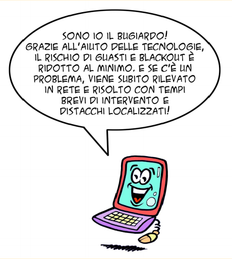

Le reti smart
La smart grid ha l'obiettivo di utilizzare tutta l'energia generata, mantenendo il flusso costante, bilanciando in modo flessibile e dinamico produzione e consumo ed evitando sprechi. A tal fine è dotata di strumenti intelligenti che consentono di governare i picchi di consumo e ridistribuire o accumulare i surplus in funzione della domanda.
Alcune applicazioni sono già diffuse: ad esempio, con il meccanismo delle fasce orarie, è possibile far pagare meno l'energia nelle ore di minor utilizzo e dare un incentivo a chi produce nelle ore di punta; i contatori intelligenti (smart meters), dispositivi che consentono la telelettura e l'accesso in tempo reale ai dati di consumo, ci sono ormai familiari.
Ed altre si stanno diffondendo... Qualche esempio?
Le nuove reti sono in grado di “autoripararsi”, prevenendo o minimizzando sovraccarichi e interruzioni, di verificare in automatico cause di guasto e individuare soluzioni; possono decidere di attivare processi industriali e elettrodomestici casalinghi quando l'energia costa meno.
La riorganizzazione della rete e la creazione di punti di ricarica consentirà un uso massivo dell'energia da fonti rinnovabili per la mobilità elettrica: gli accumulatori delle auto elettriche possono assorbire e utilizzare i picchi di produzione da fonti non programmabili.
In sintesi, lo sviluppo di reti intelligenti fornirà un importante contributo per rendere più ecologiche e smart le nostre città e consentirà di partecipare sempre più attivamente alla lotta contro i cambiamenti climatici.
